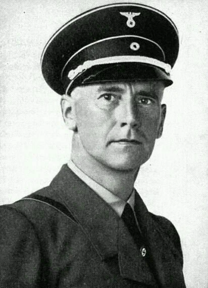
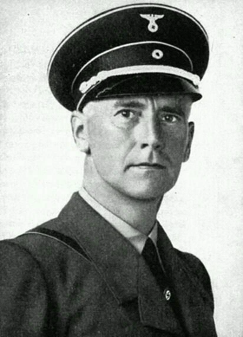
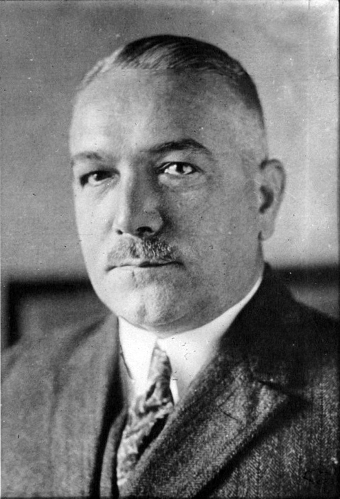
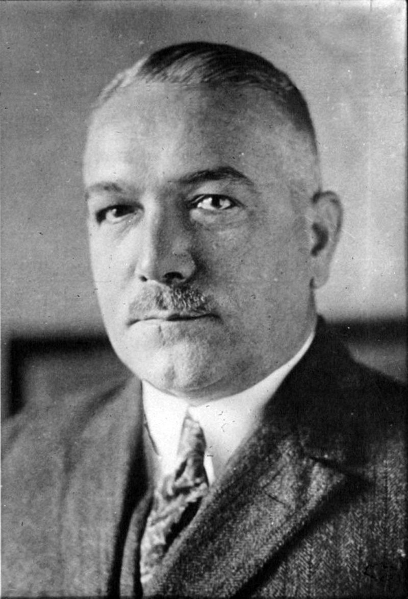

Нюрнбергский процесс
Общая информация
Нюрнбергский процесс (20 ноября 1945 – 1 октября 1946) — суд над лидерами нацистской Германии после Второй мировой войны. Проходил в Нюрнберге, Германия.
Обвиняемые: 22 высокопоставленных нациста (изначально 24, но Роберт Лей покончил с собой, а Густав Крупп был признан недееспособным).
Обвинения: преступления против мира, военные преступления, преступления против человечности.
Ключевые фигуры и приговоры
 


 

Герман Геринг
Должность: Рейхсмаршал, глава Люфтваффе.
Обвинения: Заговор, преступления против мира, военные преступления, преступления против человечности.
Приговор: Смертная казнь (покончил с собой перед казнью).
Рудольф Гесс
Должность: Заместитель фюрера по партии.
Обвинения: Заговор, преступления против мира.
Приговор: Пожизненное заключение.
Йоахим фон Риббентроп
Должность: Министр иностранных дел.
Обвинения: Заговор, преступления против мира, военные преступления, преступления против человечности.
Приговор: Смертная казнь.
Эрнст Кальтенбруннер
Должность: Глава РСХА.
Обвинения: Военные преступления, преступления против человечности.
Приговор: Смертная казнь.
Вильгельм Кейтель
Должность: Начальник штаба Верховного командования вермахта (OKW).
Обвинения: Заговор, преступления против мира, военные преступления, преступления против человечности.
Приговор: Смертная казнь.
Альфред Розенберг
Должность: Министр по делам оккупированных восточных территорий, идеолог нацизма.
Обвинения: Заговор, преступления против мира, военные преступления, преступления против человечности.
Приговор: Смертная казнь.
Ганс Франк
Должность: Генерал-губернатор оккупированной Польши.
Обвинения: Военные преступления, преступления против человечности.
Приговор: Смертная казнь.
Вильгельм Фрик
Должность: Министр внутренних дел.
Обвинения: Заговор, преступления против мира, военные преступления, преступления против человечности.
Приговор: Смертная казнь.
Юлиус Штрейхер
Должность: Главный редактор антисемитской газеты "Der Stürmer".
Обвинения: Преступления против человечности.
Приговор: Смертная казнь.
Вальтер Функ
Должность: Министр экономики, президент Рейхсбанка.
Обвинения: Заговор, преступления против мира, военные преступления, преступления против человечности.
Приговор: Пожизненное заключение.
Карл Дёниц
Должность: Гросс-адмирал, командующий ВМФ, президент Рейха после смерти Гитлера.
Обвинения: Преступления против мира, военные преступления.
Приговор: 10 лет тюрьмы.
Эрих Редер
Должность: Гросс-адмирал, командующий ВМФ до 1943 года.
Обвинения: Преступления против мира, военные преступления.
Приговор: Пожизненное заключение (освобождён в 1955 году).
Балдур фон Ширах
Должность: Лидер Гитлерюгенда, гауляйтер Вены.
Обвинения: Преступления против человечности.
Приговор: 20 лет тюрьмы.
Фриц Заукель
Должность: Генеральный уполномоченный по использованию рабочей силы.
Обвинения: Военные преступления, преступления против человечности.
Приговор: Смертная казнь.
Альфред Йодль
Должность: Начальник оперативного штаба OKW.
Обвинения: Заговор, преступления против мира, военные преступления, преступления против человечности.
Приговор: Смертная казнь.
Франц фон Папен
Должность: Вице-канцлер при Гитлере, посол в Турции.
Обвинения: Преступления против мира.
Приговор: Оправдан.
Артур Зейсс-Инкварт
Должность: Рейхскомиссар Нидерландов.
Обвинения: Заговор, преступления против мира, военные преступления, преступления против человечности.
Приговор: Смертная казнь.
Альберт Шпеер
Должность: Министр вооружений и военного производства.
Обвинения: Военные преступления, преступления против человечности.
Приговор: 20 лет тюрьмы.
Константин фон Нейрат
Должность: Министр иностранных дел, протектор Богемии и Моравии.
Обвинения: Заговор, преступления против мира, военные преступления, преступления против человечности.
Приговор: 15 лет тюрьмы (освобождён в 1954 году).
Ганс Фриче
Должность: Глава отдела пропаганды в министерстве Геббельса.
Обвинения: Преступления против человечности.
Приговор: Оправдан.
Ялмар Шахт
Должность: Президент Рейхсбанка, министр экономики.
Обвинения: Преступления против мира.
Приговор: Оправдан.
Итоги процесса
Из 22 обвиняемых:
- 12 приговорены к смертной казни (включая Мартина Бормана, осуждённого заочно);
- 3 получили пожизненное заключение;
- 4 получили сроки от 10 до 20 лет;
- 3 оправданы.
Нюрнбергский процесс стал прецедентом для международного права. За ним последовали другие процессы (1946–1949).
Дополнительно: Официальный сайт Мемориального музея Нюрнбергских процессов.